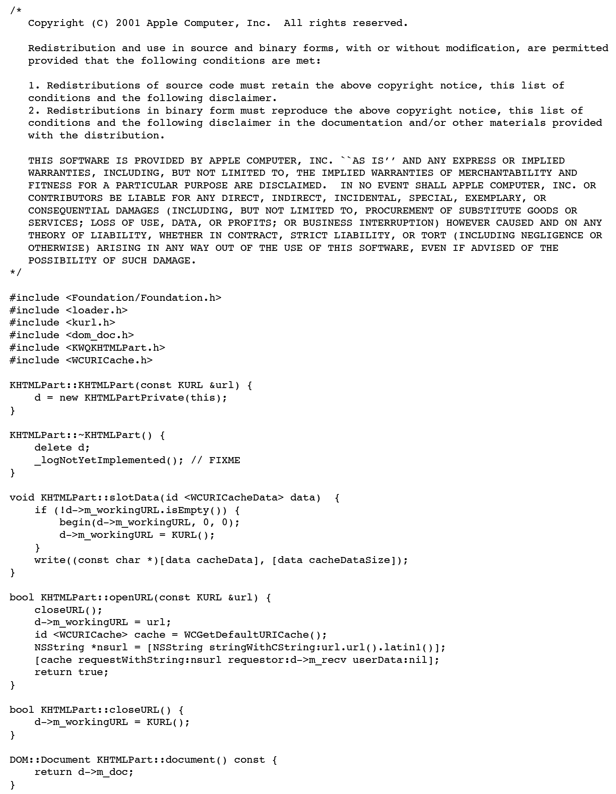
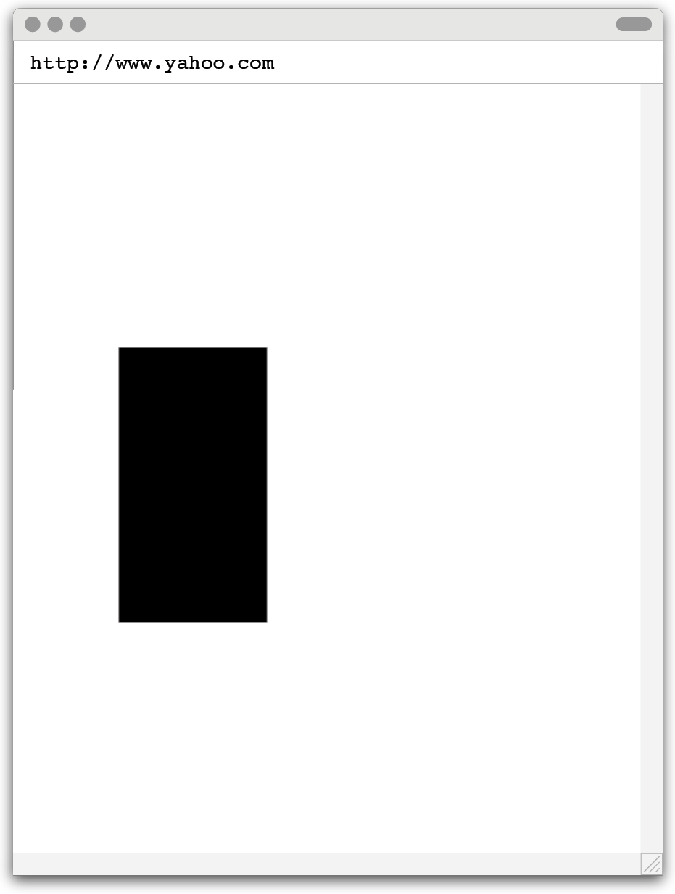
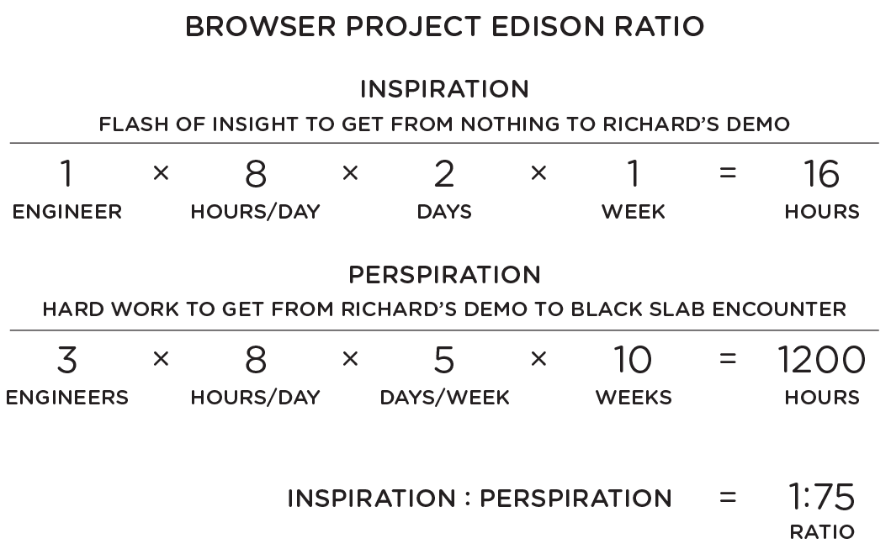

Right after we saw Richard’s demo, there was much we still didn’t know about Konqueror, the open source web browser, but we were eager to find out if was as good as it seemed. Don suggested we take a closer look at the source code itself, the body of programmer-written instructions that made the software what it was. Specifically, Don wanted us to start isolating Konqueror from the rest of KDE—to begin uncutting one of the corners Richard had cut to make his demo. He also wanted to get an estimate on Konqueror’s complexity, so we decided to count the number of lines in its source code. This count would give us both a means of comparison to Mozilla and some idea for how hard it might be to turn Richard’s demo into a real product.
Don gave this line counting job to me, possibly as a way of getting me invested in the success of Richard’s impressive programming feat. If that was the case, it worked. The morning after the demo, I got to the office about an hour earlier than usual, around 6 a.m. On my desk, next to my Mac, I set up a PC tower computer. My plan was to install Linux on this PC and download all the KDE source code onto it. Once that was done, I would scan through the code and run some tests to begin separating Konqueror from the system surrounding it.
While I waited for various installation steps to finish, I looked at the two computers in front of me: a Linux PC and a Mac. They were separated from each other on my desk by only a few inches, but the software gap loomed large. Although Linux and Mac OS X traced a common software lineage extending back to UNIX, an operating system created as a research project at Bell Laboratories in 1969, both had diverged significantly from that shared ancestor. Over time, Linux and Mac had become like two different countries separated by the same language. Linux said “lorry” where the Mac said “truck.” When it came to end user apps like web browsers, the compatibilities between them were narrow, but deeper down, at the algorithmic level where we worked as programmers, the resemblances between the two systems were broader. They retained some common technical grammar and syntax, and both systems could build and run programs written in C++, the programming language the Konqueror developers used to write their source code. Even so, Linux and Mac used different programming vocabularies and idioms for expressing programs in C++, especially when it came to graphical user interfaces. The net result was we couldn’t just copy the code from one computer to the other. If we wanted to use Konqueror as the basis of our web browser project, we would have to patch up all such terminology and technology differences in Konqueror’s Linux source code and replace Richard’s shim with solid software engineering. Adapting the code written for one operating system so that it works on another is common enough that programmers have a word to describe the task: porting. Since we could deliver an Apple-quality web browser only from source code that worked like it was written natively for the Mac—even though it wasn’t—our porting job would have to be very good indeed.
It didn’t take me long to isolate the web browser code in the KDE system. The software had a tidy organization, and Konqueror lived primarily in two directories: one called KHTML, the other KJS.
After I separated them out, I asked the computer to count the total number of lines in these two directories. This would give a rough indication of how big our porting effort would be. Since each line of code might need some porting work, the fewer lines, the better. When I saw the result, I smiled, and when I shared this number with Don and Richard, they smiled too. At just over 120,000 lines, Konqueror was less than one-tenth the size of Mozilla.1 At first, we couldn’t believe there could be such a difference between two bodies of source code that performed the same function.
Don explained. The Mozilla project leaders had designed a system they hoped would turn their software into components they could snap together like LEGOs. However, this scheme required reams of extra boilerplate code—programmers had to do something like filling out a pile of forms to register new code with this reuse system—and this buried their browser in red tape. Now that we saw the implications of this engineering decision and the resulting 10:1 ratio of Mozilla code to Konqueror code, it seemed obvious that their component notion had gotten wildly out of hand. Mozilla was bloated, unwieldy, and troublesome.
The Konqueror team had taken the opposite tack. Their code was lean and lithe. They prized brevity. Their software style was the Hemingway to Mozilla’s Faulkner.
Not only was the source code line count comparison stark by itself, but Richard had already delivered a terrific demo with Konqueror, and my postdemo analysis of source code lines had taken just a couple hours. This didn’t mean our porting effort would be a walk in the park, but we liked how quickly these early successes with Konqueror had come.
This gave us the confidence to commit. Don said he would team with Richard to show his demo up the software engineering management chain. The hope was to get buy-in from Scott Forstall, from his boss Bertrand Serlet, and his boss Avie Tevanian, that we should use Konqueror as the basis of our web browser project.
Fast forward a few days, and the executives were as amazed as we’d hoped. Richard’s demo was so clear and compelling that no cajoling was necessary to convince management that our browser project was now on track.
With their approval, our next step was to develop a strategy for porting those 120,000 lines of Konqueror code to the Mac. Understanding the complicated piece of programming we were about to attempt requires a little knowledge of software development jargon.
* * *
When I want a computer to perform a job, I type out my precise instructions using a programming language, like C++, the language the KDE developers used to write Konqueror.

These statements are probably unintelligible if you’re unfamiliar with the notation programmers use to write code, but technicalities aside, computer programs are much like cookbook recipes. Both offer specific directions to accomplish a task. Yet, while chefs write their cookbooks to be read by people, programmers can’t write for computers in the same way, because computers don’t natively comprehend programming languages. Computers speak a binary language of 0s and 1s, so to get a computer to perform my job, I have to convert my C++ code into a computer-consumable binary form using a program called a compiler. This conversion process of human-readable to machine-runnable is called compilation or building. This translation procedure also explains why lines of code written in a programming language are called source code. They’re the source material a compiler builds into (i.e., translates into) binary code the computer can execute.
Since full-featured programs like web browsers require so much source code—over 100,000 lines for a relatively succinct program like Konqueror—programmers break down all those lines into separate source code files. Doing this helps programmers organize and structure the separate subtasks. In the case of a web browser, the code for handling web addresses (URLs) might be contained in just one source code file, while a more sophisticated related area, like using URLs to download data from the internet, would be spread out over many source code files.
Chefs also break down their recipes into separate parts. For example, a recipe for Eggs Benedict would include a subrecipe for Hollandaise sauce, in addition to the instructions for poaching an egg, frying Canadian bacon, and toasting an English muffin. Yet a cookbook author might not copy a full description for Hollandaise sauce directly into the recipe for Eggs Benedict, especially if Hollandaise sauce is used elsewhere in the cookbook, perhaps in an asparagus preparation. A comprehensive cookbook would likely have only one Hollandaise sauce recipe and would refer to it everywhere else it’s used: for example, “see Hollandaise sauce, p. 123.”
Programmers do this too. When I’m writing a source code file to download data from the web, I’ll need code for processing URLs. I don’t copy this code wholesale into every place I need it. Instead, I refer to the URL source code file using an include directive, which is akin to the cross-reference to Hollandaise sauce in the Eggs Benedict recipe. Include directives in software exist for the same reason as page cross-references in cookbooks. Such directives help programmers to stay organized and to have only one copy of a set of instructions for each specific task.
This system isn’t perfect, since this cross-reference scheme introduces the possibility of mistakes. For example, if I’m in the middle of making a plate of Eggs Benedict and attempt to follow the cross-reference to Hollandaise sauce, but I turn to page 132 instead of 123 in my cookbook, I won’t find what I’m looking for.
Mistakes like this happen all the time in programming. People are fallible and computers are unforgiving. Many things can go wrong when writing programs, like making an error in programming language syntax (akin to a spelling error in a cookbook) or referring to an incorrect file in an include directive (like looking on the wrong page for the Hollandaise sauce recipe). What’s more, compilers don’t have any capacity to understand what you mean if you don’t say it exactly right.
Whenever I make an editing mistake in a program like the ones above, the compiler tells me about it with an error message. Compiler error messages are usually curt and precise: “expected expression, line 3, column 5.” This unmet expectation could be a typo or a simple logic error, and the message telling me so is much like an executive chef in a busy kitchen who takes one look over the shoulder of a junior cook preparing a plate of Eggs Benedict and says, “Hollandaise too thick.” Both messages are declarations of fault, and even if neither contains the exact remedial steps necessary to resolve the problem, both are genuinely useful.
When I cook, even when I follow an excellent cookbook recipe to the letter, the results can be mixed. Sometimes the finished food tastes good, sometimes it needs a bit more salt, and sometimes my kitchen skills let me down and the food doesn’t turn out as well as I had hoped. On the computer, even after I fix all the compiler errors and get a program to build successfully, the program rarely does the desired job exactly right the first time. Code can compile successfully yet fail to produce the desired result, and innumerable behavior errors might occur in a complex program like a web browser: Text might be rendered in the wrong location, an image might be truncated due to a graphics bug, a button or link might not work when clicked. The program might also crash outright due to a serious programming error—akin to dropping a bowl of ingredients on the floor while cooking. Making fixes and improvements from the point after successful compilation but before achieving the intended software behavior is a matter of going back and trying again. Like trying to perfect a recipe in the kitchen, getting a program to build and run correctly takes a large number of tries—rewriting source code to improve the programming instructions, fixing compiler error messages, rebuilding the code, running the program or app, debugging, and then going back to the source code, to make edits and repeat the process over and over again, as you’ll soon see.
* * *
Once we got our buy-in from management, Richard and I got together with Don in his office to hash out our porting strategy.
First, we had to go back to Richard’s demo and finish uncutting the corners. To do that, we would copy the Konqueror source code files over to the Mac and get the code to build. After that, we could begin the testing and debugging process that would make the browser code seem like a natural part of the Mac software system.
Also, since Konqueror was free software, we had to comply with the Stallman-esque license the original authors had attached to it. Our management was willing to publish some software as open source, but it was keen to keep most code closed source and proprietary. The reason was simple. Mac OS X was a revenue producer for Apple. In the iPhone era, Apple took to publishing software updates for no charge, but back then, the company sold its Mac operating system in the United States for $129 per computer.2 When we were developing our web browser strategy, the guidance from our executives was less a matter of “free as in freedom” or “free as in beer” and more “closed source as in money.”
Don, Richard, and I had to work within this constraint, and as we hammered out the open versus closed aspect of our porting plan, an interesting dynamic began to play out among the three of us.
Don loved geeking out over the details of free software licenses. During his time at Netscape and Eazel, he had become knowledgeable on the topic, and he enjoyed going back and forth on the merits, drawbacks, and terms of different licenses. He took obvious pleasure in explaining the ramifications of the Lesser General Public License (LGPL), the free software license for the Konqueror source code. These terms stated that as long as we kept Konqueror in a separate chapter of the Mac cookbook, only used its code through cross-references, and freely published any alterations we made to Konqueror recipes to make them “taste good” on the Mac, we were in compliance with Stallman’s free software license.
Richard didn’t seem to care one whit about free software, and it wasn’t beyond him to greet one of Don’s long descriptions about software licenses with an eye roll or a sigh.
I was in the middle. I took free software licenses seriously. Respecting the conditions under which someone else made their work available was simply the right thing to do. What’s more, if we hadn’t honored Konqueror’s license terms, we could have exposed Apple to legal action. I didn’t want to obsess over licenses, but I thought it important to invest some time and careful thought to ensure we had the technical and legal bases covered.
Our different ways of approaching licenses made this software strategy session seem like a nerd reboot of “Goldilocks and the Three Bears.” Fortunately, it wasn’t too hard to get it “just right,” and over a couple hours, we came up with our plan. To explain it, I’ll turn once more to cookbooks.
Consider the many millions of lines of code that make up the Linux and Mac operating systems, and picture them as comprehensive cookbooks written by separate authors. There’s overlap in the kind of recipes they offer, but the individual recipes themselves are different. The recipe book for the Mac didn’t contain a web browser. The KDE section of the Linux cookbook had one, in a chapter titled “Konqueror.” Our plan was to rip out this chapter, discard the remainder of the KDE and Linux volume, and add the Konqueror pages to the Mac cookbook. This would create an obvious problem. We would break every cross-reference Konqueror had to recipes in the parts of the cookbook we planned to throw away—there would be no Hollandaise recipe on p. 123.
To make this page-insertion scheme work, we would have to scrutinize each broken cross-reference in each Konqueror recipe as we brought it over to the Mac. When suitable equivalents already existed in Apple software—likely for common computing resources, such as colors or fonts—we could repoint the cross-reference to them. When equivalents didn’t exist—say for a web page bookmarking system—we would need to write new recipes from scratch. We imagined that alterations would often be needed to recipes on both the Konqueror and Mac sides to make the “dishes” come out right.
In programming terms, once we copied the Konqueror code over to the Mac and tried to build it, we knew it wouldn’t work right away—every broken cross-reference would result in a compiler error. We would have to fix all of these errors. After that, we wouldn’t have a working browser right away. We knew there would be bugs in abundance. The point was that once we had the source code building, we would have the firm base of the Konqueror web browser to begin with, and from there, we could start debugging, testing, and polishing the code.
We added one final element to our strategy. We imagined that some parts of the Konqueror code would require an extra amount of programming attention before they would work well on the Mac. We decided to add annotations to the source code, reminders to ourselves to go back later to improve our adaptation of the code in that particular place. Programmers often use such notes. We call them “FIXMEs.” For a big porting job like the one we were about to undertake, we expected to add a lot of FIXMEs. A couple months later, we would be very glad we had made this decision and that we had maintained the discipline to add these annotations whenever we had doubts about a piece of code while we were editing it. Each FIXME was another item on our programming to-do list.
Overall, our strategy had solid points in its favor. We were confident we could use Konqueror without running afoul of any free software license terms. Adding FIXMEs would lay the groundwork for the debugging after we got the software to build. The build phase, which would come first, would be straightforward—eliminate all the compiler errors caused by broken cross-references. The 120,000 lines of Konqueror code were spread across 300 source code files, and we estimated that getting every file to compile would take more than a month but less than two.
This sounded good at the time, but we simply weren’t prepared for how tedious this build job would be. Here’s how my days went during this phase of the project. I would try to build a Konqueror source code file, it would fail, and the compiler error message would tell me about a missing cross-reference, something that our page-tear-out scheme had broken. I would fix the problem and try to build again. Another error message. Another fix. And again. And again. It went on and on. Staring at the computer screen in my office. Building and reading and responding to compiler error messages. It began to feel like I was a character in an existentialist play, doomed to a repetitive colloquy with The Compiler:
ACT I. SCENE XXXVI.
Apple Infinite Loop Campus, Cupertino. Ken’s office.
Ken is seated at his desk. His hands are on his keyboard. He types a command to invoke The Compiler on a file named kjs_binding.cpp.
the compiler: kjs_binding.cpp: error on line 200: use of undeclared identifier “protocol”
Ken looks up the appropriate declaration for “protocol.” He types it in.
ken: Here you go, compiler. I’ve declared “protocol.” Please try again.
Once again, Ken types a command to invoke The Compiler on kjs_binding.cpp.
the compiler: kjs_binding.cpp: error on line 201: use of undeclared identifier “host”
Ken looks up the appropriate declaration for “host.” He types it in.
ken: Gosh, I’m sorry about that missing “host” identifier. Here it is. Try now.
Once again, Ken types a command to invoke The Compiler on kjs_binding.cpp.
the compiler: kjs_binding.cpp: error on line 202: use of undeclared identifier “port”
Don and Richard endured this build ordeal along with me, and during lunch and coffee breaks we commiserated with each other about how bored we were. We couldn’t fob this work off on junior programmers or interns either. Apple didn’t work like that. Secrecy was one reason, but, more important, Apple didn’t separate research and development from software implementation. We were responsible for coming up with the ideas for our web browser and writing the shipping code that went out to customers too.
There was no exit from the tedium. We just had to keep going. Yet, every hour of monotony was a contribution to our porting strategy, and every file we went through was an opportunity to read and learn about our adopted source code. Slowly, day after day, week after week, we whittled down the list of files we still needed to build.
Our estimate of two months was about right. We finally got to the end of the compiler error messages. Konqueror built on the Mac, and we had a double-clickable app. When we launched it, our new browser app displayed an empty white window. Now we had to get our code to do what browser apps exist to do: load web pages. It couldn’t yet, and many times our app crashed when we tried. Other times the browser didn’t appear to do anything at all.
This is where our idea of adding FIXMEs paid dividends. We wrote code to autogenerate a report as we attempted to load a web page. Every FIXME in our code added an entry to this report, which made it clear that, behind the scenes, in the depths of our software, our browser was doing a lot, even if it didn’t yet produce visible web pages.
The three of us took to positioning a FIXME reporting window next to the browser app window on our screens, and we would closely eye the report as we tried out our browser. The workflow became: Try to load a page, inspect the report, change the source code to patch up the most glaring problem the FIXMEs seemed to show, then try again.
At the very start of this debugging phase, this report contained entries like: “Rendering images not implemented . . . Web page links not implemented . . . Running JavaScript code not implemented.” Later on, as we made improvements to the code, we updated many of these “not implemented” entries to “partially implemented,” and when we felt an area with a FIXME was finally in good shape, we removed the annotation altogether. And yet, after fixing scores of these problems, our browser window showed no signs of responding whatsoever. It remained an empty expanse of white pixels while the voluminous FIXME report continued to point out how much we had left to do.
We kept going, and after more weeks of tedious work, Richard had to take a couple of days off. He had been focusing on the graphics routines essential to rendering elements on the screen. He believed he was close to eliminating the need for a few critical FIXMEs. He briefed me, and I picked up the work where he left off. After a few hours of analysis, I found a place where it seemed like the software was, in anthropomorphic terms, going through the motions of drawing a web page without actually putting the pen down on the page. It was like a web browser version of air guitar. I wrote some code to address this, then I built the browser app and launched it.
I typed in a URL: http://www.yahoo.com. The FIXME report filled up with line after line as it always did, but the browser didn’t crash. A few seconds passed, and then the browser did something. It drew me a picture.

The Black Slab. The first real “web page” our Apple browser ever loaded from the internet.
I quit the browser app and tried again. I loaded the Yahoo! home page just like before. The FIXME report filled up, the browser didn’t crash, I got the same brief pause . . . then the same black rectangle.
I ran down the hall to get Don. When we got back, I quit the browser and loaded the Yahoo! main page again. We held our breath through the same pause . . . and we then saw the same black rectangle. The browser had finally done something!
We started hooting and hollering and clapping each other on the back. We acted like we were in the scene from 2001: A Space Odyssey, when our early primate ancestors were visited by the alien Black Slab about a dozen minutes into the film. Well, we aped them. We pointed and whooped. I tried the page load once more. It worked again . . . another black monolith! It was real!
While this achievement may seem underwhelming, we were thrilled. For the best part of three months since Richard’s demo, we had put our faith in our porting strategy, even though it yielded results we could track only indirectly through numbers: source code files built, cross-references fixed up, FIXMEs retired. Now we could see web pages in the browser window.
Don and I had our own Black Slab Encounter. We had slogged through our own long period of darkness and doubt about our browser project, and dawn had broken.
There were only two Eureka! moments in my career at Apple, and this was one of them. I was sorry Richard wasn’t around to share it with us. His demo had provided the first indication of Konqueror’s potential. The Black Slab Encounter was the next big step. It showed our porting strategy was really working, making it a milestone in our effort to turn our demo into a product.
We would never again endure a period where we went weeks without visible evidence of progress. Once we started to see web pages loading, we could also see our browser getting better, almost on a daily basis. Before the week was out, we turned the black rectangle into a page displaying all the text on the Yahoo! home page. A couple days after that, web links were rendering with the blue underline style then prevalent. The following week, the first images appeared. When I loaded that first web page, it was like I had thrown a switch, and the lights finally came on.
These days, most of us take web browsers for granted, so the analogy to lights is apt. We surf the web all the time without thinking about browsers as a technology that had to be created. The same goes for electric lighting, and I think we can learn something about our twenty-first-century efforts with our browser by looking closer at Edison’s nineteenth-century approach to inventing his lightbulb.
Edison too had his technical struggles, including his search for a lightbulb filament material that would burn brightly and last long. I enjoy this quaint description of his quest, which comes from a 1910 book titled The Story of Great Inventions:
[Edison] sat one night thinking about the problem, unconsciously fingering a bit of lampblack [a pigment made from soot] mixed with tar which he had used in his telephone. Not thinking what he was doing, he rolled this mixture of tar and lampblack into a thread. Then he noticed what he had done, and the thought occurred to him: “Why not pass an electric current though this carbon?” He tried it. A faint glow was the result . . .
He next set out to find the best kind of carbon for the purpose. He carbonized paper and wood of various kinds—in fact, everything he could find that would yield a carbon filament. He tried the fibers of a Japanese fan made of bamboo, and found that this gave a better light than anything he had tried before. He then began the search for the best kind of bamboo. He learned that there are about twelve hundred varieties of bamboo. He must have a sample of every variety. He sent men to every part of the world where bamboo grows. One man travelled thirty thousand miles and had many encounters with wild beasts in his search for bamboo. At last, a Japanese bamboo was found that was better than any other. The search for the carbon fiber had cost about a hundred thousand dollars.3
This little story has it all: Flashes of inspiration! Intrepid men! Vast distances! Wild beasts! Huge sums of money! Even the author of The Story of Great Inventions has a suitably tall-tale-telling name, Elmer Ellsworth Burns.
Of course, the real lightbulb development story is more complicated, and I think we might reasonably question whether Edison really did absentmindedly finger lampblack and tar and then come up with the gee-whiz thought of passing an electric current through the wirelike result. As Steven Johnson says in his book, Where Good Ideas Come From, “Folklore calls Edison the inventor of the lightbulb, but in truth the lightbulb came into being through a complex network of interaction between Edison and his rivals . . . Edison built on the designs of at least a half dozen other inventors who went before him, including Joseph Swan and William Sawyer.”4
Edison didn’t dream up the idea of electric lighting on his own, and carbon had been used in lightbulb filament investigations long before Edison started looking into its suitability—Joseph Swan experimented with carbon extensively. Yet such predecessors failed to create a practical lightbulb. Edison succeeded. Why? An adequate explanation must include Edison’s conception of electric lighting as a complex electric generation and distribution system, his already-established track record as an inventor, his ability to parlay his reputation into the necessary corporate funding for his investigations, and his vision to establish and lead one of the first product-oriented research and development labs, an organization that efficiently coordinated the efforts of many.5
All this mattered, but I think Edison’s large-scale success was built on a foundation of tending to small details. I would like to turn the discussion back to how Edison himself described his approach for constructing the foundations for his innovative work, specifically, how he solved problems like finding the best filament material for his lightbulb: “None of my inventions came by accident. I see a worthwhile need to be met and I make trial after trial until it comes. What it boils down to is one per cent inspiration and ninety-nine per cent perspiration.”6
In saying this, has Edison himself engaged in his own Burnsian oversimplification? If Edison really wanted to spin a compelling self-serving myth about his powers as an inventor, he might have come up with a better explanation than saying, essentially, “I worked hard.” As myth, this rates poorly. It’s unmysterious. It’s as if Edison is telling us that, even if the twirling of tar and lampblack had happened exactly as Burns described it, such bursts of insight don’t matter that much in the big picture. For Edison, it was more important to build on promising ideas and keep working and working until an invention was made real.
As an engineer, I’m interested in Edison’s concrete numbers. This 1:99 relationship of inspiration to perspiration sounds like a lot. Is it? The story of our Apple web browser development provides some data to check. Richard’s demo served as our inspiration. Don, Richard, and I proceeded together from there, and we worked hard up until the Black Slab Encounter. Here’s a rough breakdown of the hours.

At first glance, this ratio of 1:75 shows that Edison may have overestimated the amount of required effort by around 25 percent, and that would be a significant error. However, in making his full 1:99 claim, Edison was talking about finished inventions. As I said, the Black Slab Encounter was an important milestone for us on the browser project, but we were still a year away from being done. Remember what the Black Slab indicated—it was the first time our new browser code did anything, other than failing to respond, crashing, or amassing FIXME reports. And yet, even though we were still at such an early stage in the overall development of our program, with many months ahead of us before we could consider ourselves to have produced a finished product, we were already at seventy-five parts perspiration to one part inspiration. From this perspective, Edison grossly underestimated.
I doubt Edison believed he was proposing a physical law or had any expectations his 1:99 ratio was a universal constant. Even so, his experience taught him something about producing inventions: Hard work was essential. And yet, looking back to the Burns excerpt, twirling the tar and lampblack has equal stature in the narrative as the worldwide search for the best filament material. If Edison’s 1:99 ratio is to be believed, then Burns greatly inflates the role of inspiration in his account, and perhaps that’s why Edison spoke up for the necessary investment of effort to go from an idea to an invention.
We want to believe geniuses like Edison can conjure world-changing inventions out of thin air. Easy explanations are alluring, and Edison-like inspiration seems magical. Perspiration, we know, involves drudgery. When Burns crafted his popular retellings of famous inventions like the incandescent lightbulb, he highlighted an imagined magical moment. Edison knew the actual story was more about the drudgery.
I agree with Edison. Ideas are nothing without the hard work to make them real. So it was for Edison in his search to find the best lightbulb filament material, and although our results with our web browser certainly were less profound for humanity, so it was for us.
Consider where we would have been weeks after Richard’s demo if we hadn’t developed our porting strategy and set about executing it. We would have been no better off than Don and I were after our initial six weeks of investigation leading up to Richard’s arrival at Apple. We would have been nowhere with nothing to show. Richard’s demo would have been little more than a programming curiosity if the three of us hadn’t gritted our teeth, kept our noses to the grindstone, and thrown all the hard-work maxims we could think of into building the code, fixing cross-references one at a time, studying FIXMEs, and producing the Black Slab Encounter.
But was that it? Was making a web browser just a matter of a good demo plus some programming elbow grease? And what about that elbow grease? Since Edison suggests that dreaming and brainstorming consume so little time, then what is this 99 percent of toil that takes up the remainder?
In deceptively brief terms, Edison tells us: “I make trial after trial until it comes.” He and his team were willing to perspire, but he also knew what he would be doing with all those hours: trial and error. For the lightbulb, filaments were the key, and bamboo was the most promising material, so Edison tested every kind of bamboo to find the best. If Burns is to be believed, there were twelve hundred varieties of bamboo, and Edison tried each one. It sounds simple, and it was, but the way Edison defined the project also gave it a shape. He crossed off items from a to-do list.
When we made our porting strategy for the web browser, we turned to something like Edison’s model. We knew the compiler would tell us about broken cross-references, and we examined all of them one at a time. We knew our FIXMEs would tell us where our code was weakest, and we studied the reports closely. Moving toward the Black Slab Encounter was a stepwise process, much like Edison’s search for the best bamboo. Edison did trial after trial with filaments; we went file after file in our build process and FIXME after FIXME trying to load a web page. Both projects were built on unglamorous grunt work, but the specifics matter. Edison wasn’t just trudging toward the horizon in a desert, hoping that the crest of the next sand dune would reveal an oasis—that sounds more like the way that Don and I wandered through our browser investigations in the weeks before Richard joined us. Instead, Edison searched specifically for the best kind of bamboo, and he was undaunted by the need to check a vast number of varieties. Each one he tested was an item crossed off and brought him closer to finding which one was the best. In the lead up to the Black Slab Encounter, we did the same. Even though Don, Richard, and I struggled with the tedium, we kept plowing through each file and FIXME.
Hard work is hard. Inspiration does not pay off without diligence. We collaborated to get through the drudgery. Our knowledge of our craft—code, compilers, software licenses, and debugging—gave us the confidence to forge ahead and to invest and direct the necessary time and effort to make Richard’s demo pay off.
Of course, a program that produced nothing but a Black Slab was far from a fully functioning web browser. We were still a long way from delivering a finished app, but our technical dawn had broken, the lights were now on, so at least we could see where we were going.